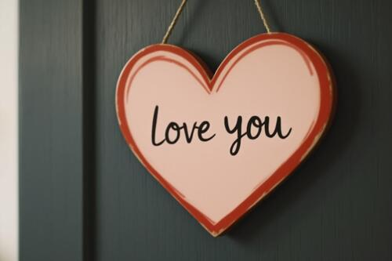

Audio reading slot ready for poetry/poems/the-currency-of-affection.mp3.
The Currency of Affection
I have been noticing how often we say it— love you—the way we used to say so long or see you later, a little verbal wave as we back out of conversations, our hands already reaching for our keys. It's become a kind of punctuation mark, a way to end the sentence of an interaction, and I wonder if we've turned affection into small change, something we keep in our pockets to hand out freely, the way people used to carry mints or tissues. Not that I'm complaining, exactly. There's something democratic about it, this scattering of tenderness like birdseed, this assumption that everyone deserves at least the sound of being cherished, even if it's just the sound. But sometimes I think about the word love and how it used to be a heavier thing, something you'd carry carefully in both hands like your grandmother's china or a sleeping child, not something you'd toss casually over your shoulder while walking away. My friend tells me the ancient Greeks had four different words for varieties of affection— eros and philia and storge and agape— which seems excessive until you realize we're trying to use one word to mean everything from I would die for you to thanks for holding the door. Maybe that's the problem, or maybe it isn't a problem at all. Maybe the word is like a dollar bill that's been folded and unfolded so many times it's soft as cloth, passed from hand to hand until no one remembers whose pocket it started in, but it still buys something, doesn't it? Which brings me back to the question of whether we mean it, and I think maybe meaning isn't the right word. Maybe it's more like humming— you do it without thinking, but it still makes a kind of music, still fills the silence with something warmer than silence. So when I say it tonight to my wife I'll mean it the way I mean my own breathing, the way the heart means its beating— not as a declaration but as a fact, not as poetry but as the plain truth of being alive in the same house, the same moment, the same brief and unrepeatable Tuesday evening when the light is fading and the dog is sleeping and we're all still here, still finding our way through this strange life with nothing but these small, worn words to guide us home.